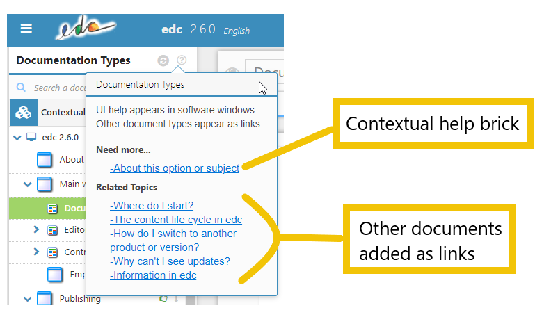
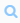
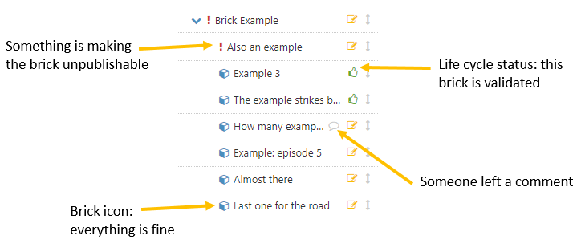

Par défaut, edc propose 7 types de documentation :
- contextualized UI help
- how-tos, pour les instructions d'utilisation
- concepts, pour des documents théoriques
- training, pour des tutoriaux
- Q&A, pour des questions-réponses
- glossary, pour expliquer les termes spécifiques
- release notes, pour présenter les nouvelles fonctionnalités et les corrections.
Vous pouvez créer davantage de types, ou éditer les existants.
Les éléments créés sous le type Contextualized UI help apparaissent dans votre logiciel aux point d'entrées que vous aurez définis.
Les autres types apparaissent sous forme de liens accessibles depuis l'aide contextuelles.

L'aide contextuelle telle qu'elle apparaît dans votre logiciel
Dans le bandeau Documentation Types, vous pouvez accéder à tous les types de documentation défins.
Vous pouvez utiliser le champ de recherche  pour filtrer le contenu.
Les icônes devant le titre indiquent l'état de complétude dans la définition de l'aide contextuelle. Le point d'exclamation signifie qu'il manque de l'information (pas de clefs d'immatriculation, champs restés vides, etc.). Une icône d'avertissement signifie qu'une traduction est incomplète.
Pour connaitre la raison exacte de ces alertes, passer la souris sur l'icône pour faire apparaître un message l'explicitant.
L'icône signifie que l'option 'No keys because no need to publish this brick' est sélectionnée.
Les icônes après le titre indiques si il existe des commentaires, et donnent le statut de la documentation dans le cycle de validation.

En cliquant sur le bouton droit de la souris, vous accédez aux fonctionnalités suivantes :
- create
- edit
- add a comment
- add as link (non-contextual help items only)
- delete
Pour plus d'information sur les types de documentation :
 |
see Structure and Prioritize your edc content on Youtube |